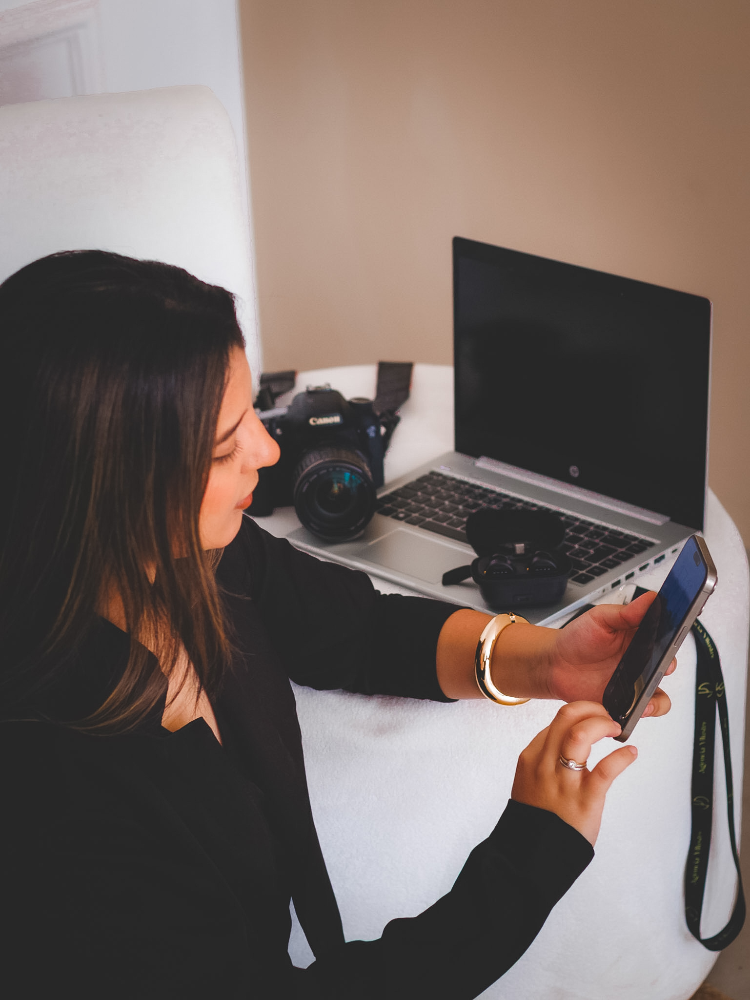
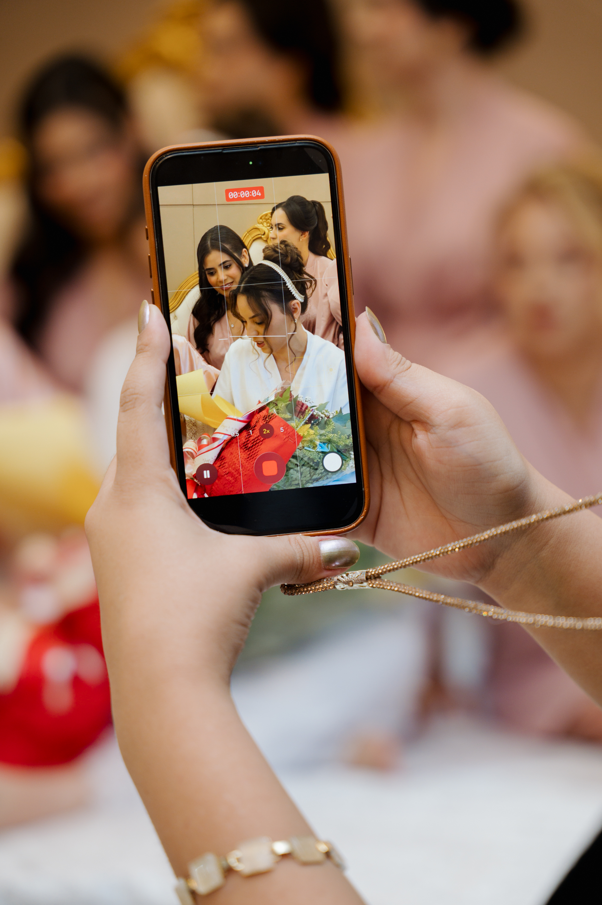
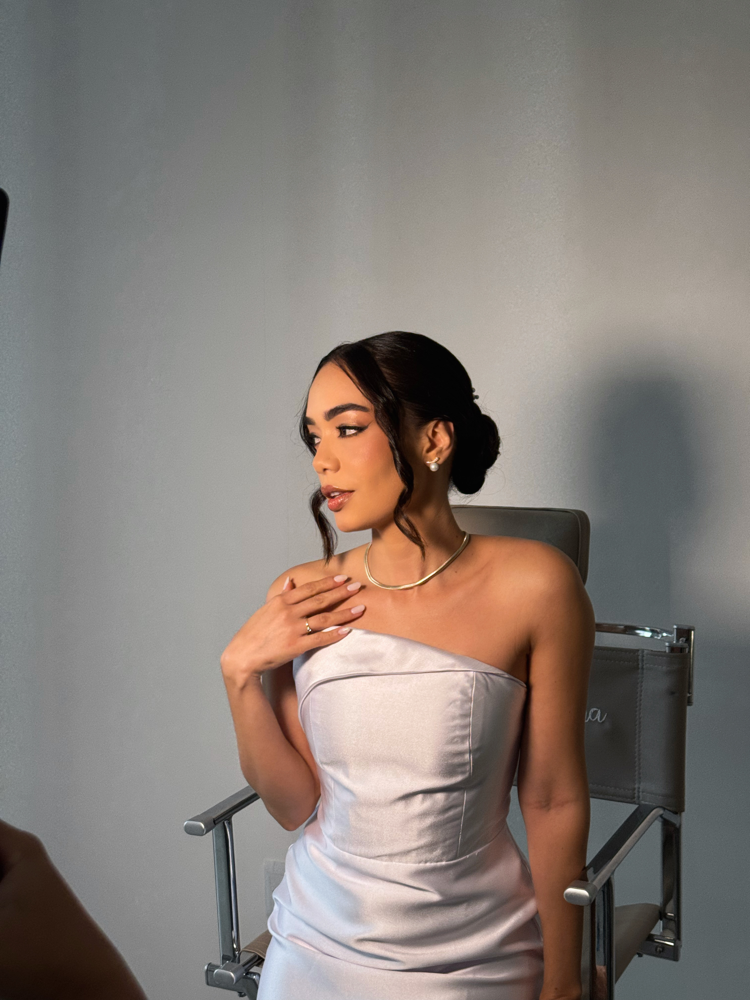
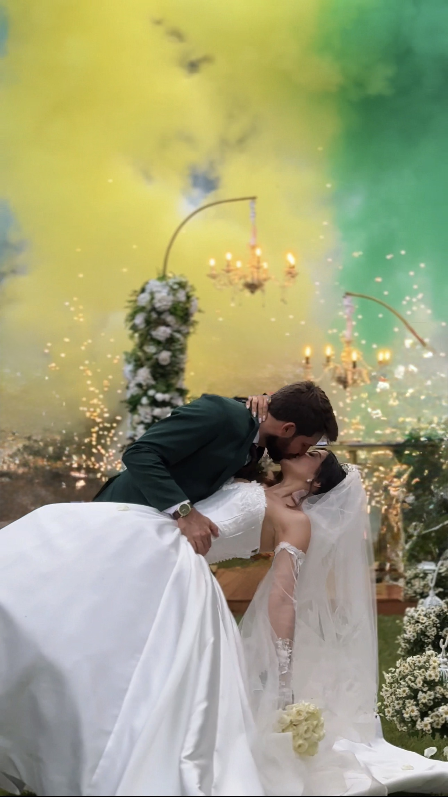

Storymaker
O evento acontecendo e sua audiência vivendo junto. Bastidores, momentos-chave e publicações em tempo real.
Conteúdo vivo. Memórias reais.
Aqui transformamos ideias, marcas e momentos em experiências memoráveis.
Instagram @yllustre_agencia
O que fazemos
Planejamos, captamos e entregamos conteúdo pronto para emocionar pessoas e movimentar marcas.
O evento acontecendo e sua audiência vivendo junto. Bastidores, momentos-chave e publicações em tempo real.
Vídeos dinâmicos e estratégicos para campanhas, redes sociais, eventos corporativos e presença digital.
Filmes com narrativa, atmosfera e emoção para casamentos, formaturas e celebrações inesquecíveis.
Posicionamento estratégico para profissionais e empresas aparecerem com consistência, personalidade e intenção.
Identidade e peças visuais que tornam sua comunicação reconhecível.
Páginas estratégicas, responsivas e pensadas para transformar visitas em oportunidades.
Storymaker
Cobertura storymaker para casamentos.



Marcas que confiam
Negócios, profissionais e eventos que escolheram a Yllustre para transformar presença em conexão.
Social Media
Cuidamos da produção e do posicionamento do seu Instagram para que sua marca apareça com estratégia, consistência e personalidade.
Entendemos o que você procura.
Junto com a sua ideia e com o nosso conhecimento, planejamos tudo o que a sua marca precisa.
Direcionamos o posicionamento para a sua profissão.
Conquista presença, autoridade e conexão com o público certo.
Vamos começar?
Conte as suas expectativas para planejarmos os próximos passos.
Conversar no WhatsApp